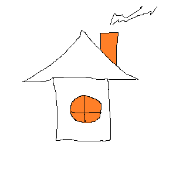

Maja pildikaart
Hiire klik on akna, seina, katuse peale

Sein on püstine (välis- või sise-) konstruktsioon ja pind, mis määrab ruumi või hooneala ehitusliku piiri ning kannab mitmesugust koormust, pakub varju ja tagab heliisolatsiooni, eraldab ruume, täidab dekoratiivset eesmärki ja muid funktsioone.